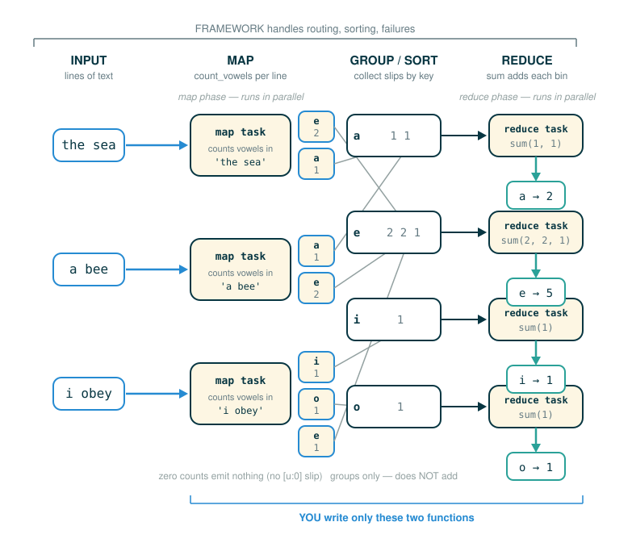

4.7.1 MapReduce: Pure Functions and Key-Value Flow
Sometimes a dataset is simply too big for one computer to chew through in a reasonable amount of time. The data might be spread across many machines, and no single machine even holds all of it. MapReduce is a way to describe a computation over that kind of data so that many machines can work on it at once, while you write only ordinary, simple functions.
By the end of this lesson you will be able to do five things: explain why pure functions make it safe to spread work across many machines, read a key-value pair as a labeled slip of paper, name the three stages of a MapReduce computation (map, then group/sort, then reduce), read the official vowel-counting map function token by token, and say clearly which jobs you write and which jobs the framework handles for you.
You do not need any prior experience with distributed systems. You do need one habit we will lean on hard: separate the part of the problem that is about what to compute from the part that is about how to run it across machines. MapReduce is, at heart, a tool for keeping those two things apart.
An Analogy: Counting Hands in a Library
Imagine a library has thousands of pages of survey responses, and you want to know how many times each vowel appears across all of them. One person could sit down and count every page alone, but that would take forever.
Here is a faster plan. You hand different stacks of pages to different volunteers. Each volunteer reads only their own stack and, for each page, writes small slips of paper: one slip that says "the letter a appeared 4 times," another that says "the letter e appeared 2 times," and so on. They drop each slip into a labeled bin: all the "a" slips into the "a" bin, all the "e" slips into the "e" bin.
Once every volunteer is done, a second group of people takes over. Each of them grabs one bin, say the "a" bin, dumps out every slip inside it, and adds up all the numbers. The "a" bin person announces a single final total for "a." The "e" bin person announces a single final total for "e." Put those announcements together and you have your answer for the whole library.
Three things make this work, and they map exactly onto the three MapReduce stages:
| In the library | In MapReduce |
|---|---|
| Each volunteer reads pages and writes labeled slips | Map: a function reads each input and emits labeled key-value pairs |
| Slips are sorted into bins by their label | Group/sort: all pairs with the same key are collected together |
| Each bin person adds up their pile | Reduce: a function combines the values for one key into a final result |
Notice what no single volunteer had to know: how many volunteers there were, who got which pages, what to do if a volunteer dropped their stack and had to redo it, or how the bins got carried to the second group. Someone organizing the room handled all of that. In MapReduce, that organizer is the framework, and you are the volunteer who only has to know how to read a page and how to add up a pile.
What MapReduce Is
Distributed systems are often used to collect, access, and manipulate large data sets. A dataset too large for a single machine is distributed among many machines, each of which processes a portion of it. The results of that processing then have to be aggregated across machines, so that what one machine computed can be combined with what the others computed. MapReduce is the programming framework that coordinates this kind of distributed data processing.
A MapReduce application is expressed in terms of pure functions. One function is used to map over a large dataset, and another is used to reduce the mapped values into a final result. That is where the name comes from: a map step and a reduce step. You already wrote map and reduce as higher-order tools in Section 2.3 — map applied a function to every element of a sequence, and reduce combined a sequence into one value. MapReduce is that same map-then-reduce shape, scaled across many machines.
The single most important idea is that you, the application developer, should not have to coordinate machines by hand. You describe the data-processing logic with two functions. The framework handles distribution, communication, grouping, machine failures, network failures, and progress monitoring. The challenges of distributed computation are hidden from you behind an abstraction barrier.
Why Pure Functions Make Distribution Safer
MapReduce requires that the map and reduce functions be pure functions. A pure function depends only on its inputs and produces a return value or emitted output without changing any hidden shared state.
Purity matters because, in a distributed system, the framework takes liberties with your functions. The same work might run:
- in a different order than you wrote it,
- on a different machine than you expected,
- at the same time as other copies of the same work, or
- a second time, after a failure, to recompute a lost result.
A program expressed only in terms of pure functions has considerable flexibility in how it is executed. Sub-expressions can be computed in arbitrary order and in parallel without affecting the final result. That flexibility is exactly what lets MapReduce reorder computations and run them efficiently across many machines.
Now picture the opposite. If a function secretly changed some shared counter on the side, then running it twice (because the first machine crashed) would change the answer, and running two copies at once would corrupt the count. Purity is the property that makes "run it again" and "run several at once" harmless. This is why the framework can be so aggressive about distributing the work: it trusts that your functions have no hidden effects.
Separation of Concerns: Two Jobs, Kept Apart
The principal advantage of MapReduce is that it enforces a separation of concerns between two parts of a distributed data processing application:
1. The map and reduce functions that process data and combine results.
2. The communication and coordination between machines.You write part 1. The framework owns part 2. The coordination mechanism handles many issues that arise in distributed computing, such as machine failures, network failures, and progress monitoring. Managing those issues introduces real complexity, but none of that complexity is exposed to you. Building a MapReduce application only requires specifying the map and reduce functions in part 1; the rest is hidden via abstraction.
This is the same abstraction-barrier idea you have used all along, applied to a whole datacenter. On one side of the barrier you think about the computation. On the other side, the framework thinks about distributed execution. Neither side needs to know how the other does its job.
Key-Value Pairs as Labeled Slips
The unit of data that flows through a MapReduce computation is the key-value pair. A key-value pair is like one labeled slip of paper: a key written at the top and a value riding along beneath it.
The key is the label. It tells the framework which pile, or bin, the slip belongs in. Every slip labeled "a" goes together; every slip labeled "e" goes together. The value is the piece of data riding along with that label, here a count.
This tiny representation is powerful precisely because it is so dumb. The framework does not need to understand vowels, or counting, or anything about your application. To group the slips, it only needs to compare keys and put equal keys next to each other. The meaning of the data stays your concern; the mechanical sorting becomes the framework's concern. That clean split is what lets one framework serve thousands of completely different applications.
The Three Stages of a MapReduce Computation
The MapReduce framework assumes as input a large, unordered stream of input values of an arbitrary type. For instance, each input might be a line of text in some vast corpus. Computation then proceeds in three steps:
1. A map function is applied to each input, which outputs zero or more
intermediate key-value pairs of an arbitrary type.
2. All intermediate key-value pairs are grouped by key, so that pairs with
the same key can be reduced together.
3. A reduce function combines the values for a given key k; it outputs zero
or more values, which are each associated with k in the final output.To carry this out, the framework creates tasks, perhaps on different machines, that play different roles. A map task applies the map function to some subset of the input data and outputs intermediate key-value pairs. A reduce task sorts and groups key-value pairs by key, then applies the reduce function to the values for each key. All communication between map and reduce tasks is handled by the framework, as is the work of grouping intermediate key-value pairs by key.
To use many machines at once, multiple mappers run in parallel in a map phase, and multiple reducers run in parallel in a reduce phase. In between those phases, the sort phase groups together key-value pairs by sorting them, so that all key-value pairs with the same key end up adjacent.

Note the careful wording of the steps. The map function emits zero or more pairs per input, not exactly one. A reduce function also outputs zero or more values per key. That flexibility is deliberate: an input that has nothing interesting to say can stay silent, which we will see is exactly what happens with vowels that do not appear in a line.
Counting Vowels: The Official Map Function
Consider the problem of counting the vowels in a corpus of text. We can solve it with MapReduce by choosing the right map and reduce functions.
The map function takes one line of text as input and outputs key-value pairs in which the key is a vowel and the value is a count. Crucially, zero counts are omitted from the output. Here is the official map function, exactly as written:
# (1)
def count_vowels(line):
"""A map function that counts the vowels in a line."""
for vowel in 'aeiou':
count = line.count(vowel)
if count > 0:
emit(vowel, count)
This function calls emit, which is the framework's way of sending out one key-value pair. You do not return a list; you hand each pair to the framework as you produce it, and the framework takes it from there.
Follow the line: the loop header
for vowel in 'aeiou':
├─ for ......... begin a loop over a sequence
├─ vowel ....... the loop name, set to one character each pass
├─ in .......... draw the next item from the sequence on the right
├─ 'aeiou' ..... the five characters to step through, in order
└─ result ...... runs the body once for each of a, e, i, o, uThe string 'aeiou' is itself a sequence of characters, so looping over it visits the five candidate vowels one at a time. On each pass, the name vowel is bound to a single character.
Follow the line: counting one vowel
count = line.count(vowel)
├─ count ....... the name we will bind the result to
├─ = ........... assignment: bind the name on the left to the value on the right
├─ line ........ the input string passed into the map function
├─ .count ...... the string method that tallies occurrences of a substring
├─ (vowel) ..... the substring to look for, the current vowel
└─ result ...... binds count to how many times this vowel appears in lineline.count(vowel) asks the string line a simple question: how many times does this one character appear in you? The answer is a whole number, possibly zero, and it gets stored in count.
Follow the line: deciding whether to emit
if count > 0:
├─ if .......... run the body only when the test is true
├─ count ....... the tally we just computed
├─ > ........... the greater-than comparison operator
├─ 0 ........... the number zero
└─ result ...... emit a pair only when this vowel actually appearedThe emit(vowel, count) line inside the body sends one slip of paper, labeled with vowel and carrying the number count, into the framework. Because it sits under if count > 0:, it fires only when the vowel was present. A line with no u in it never emits a ("u", 0) slip, so the framework is never burdened with carrying around useless zero-count pairs.
The Reducer Is Built-In sum
For this problem, you do not even have to write the reduce function. The reduce function is Python's built-in sum. It takes as input an iterator over values — the pile of numbers for one key — and returns their sum.
Recall the bins from the library analogy. After the group/sort stage, the framework hands the reduce function one key and a stream of every value that was ever emitted under that key. For the key "a", the reducer receives all the counts that any line emitted for "a", and sum adds them into a single total.
That is the whole reduce step for vowel counting: add up a pile of numbers. The simplicity is the point. Because grouping is the framework's job, your reducer only ever sees the values for one key at a time, already collected, and can treat them as a plain pile to combine.
What the Framework Handles for You
A reasonable question: if counting is this simple, why is a whole framework needed? Could you not just call a function in a loop?
For a small file on one computer, yes. But for genuinely distributed data, the hard parts are not the counting at all. The framework is the thing that:
- decides which machine processes which slice of the input,
- routes intermediate key-value pairs to the right reduce tasks,
- runs the sort phase so that equal keys become adjacent,
- detects tasks that fail because a machine or the network went down,
- recomputes any results that were lost to a failure, and
- monitors and reports the progress of the overall computation.
Every item on that list is a genuine distributed-systems problem, and every one of them is hidden from you behind the map/reduce interface. That hiding is the entire value proposition. You get to think only about the computation, expressed as two pure functions, while the framework absorbs the difficulty of running them safely across many machines.
⚠Common Beginner Traps
- Thinking "map" means Python's built-in
maponly. In MapReduce, "map" names the stage that applies your map function to each input record and emits intermediate key-value pairs. It is a role in the pipeline, not themapbuiltin. - Assuming each input emits exactly one pair. The map function emits zero or more pairs per input. In the vowel example, a line with no
uemits no("u", 0)pair at all, because of theif count > 0:guard. - Confusing grouping with reducing. The group/sort stage only collects all values that share a key into one bin. The reduce stage is what actually combines those values. They are two different stages.
- Forgetting why purity matters. If a map or reduce function reads or writes hidden shared state, then running it in parallel, reordering it, or retrying it after a failure can change the result. MapReduce relies on purity to make all of that safe.
- Believing the programmer coordinates the machines. You write only the map and reduce functions. The framework owns communication, grouping, failures, network problems, and progress monitoring.
✓Check Your Understanding
- Why does MapReduce require pure map and reduce functions?
- What does a map function output for each input?
- What does the group/sort stage do, and how is it different from the reduce stage?
- Run the official
count_vowelsmap function on the single line'banana'. Which key-value pairs does it emit, and in what order? - What reduce function combines the vowel counts in the official example, and what does it receive as input?
- Name three distributed-systems jobs that the framework handles so you do not have to.
Show the answers
- Because a program built only from pure functions can have its sub-expressions computed in arbitrary order and in parallel without changing the final result. That lets the framework reorder work, run many copies at once, and recompute after a failure, all safely.
- Zero or more intermediate key-value pairs, where the key and value can be of an arbitrary type.
- The group/sort stage collects all key-value pairs that share a key into one group, so they are adjacent and ready to be reduced together. It does not combine the values. The reduce stage is the step that actually combines the grouped values for a key into final output.
- It emits only
("a", 3). The loop steps through'aeiou'in order:'a'appears three times in'banana', soemit('a', 3)fires, while'e','i','o', and'u'each have a count of zero and are skipped by theif count > 0:guard, so no pair is emitted for them. - The built-in
sum. It receives an iterator over all the values emitted for one given key, for example all the counts emitted for"a", and returns their sum. - Any three of: deciding which machine processes which input, routing intermediate pairs to the right reducers, running the sort phase to make equal keys adjacent, detecting failed tasks, recomputing lost results, and monitoring progress.
§Summary
MapReduce is a framework for processing very large, distributed datasets. You express the computation as two pure functions: a map function and a reduce function. The map function is applied to each input and emits zero or more key-value pairs, each like a labeled slip of paper. The framework then runs a group/sort stage that collects all pairs with the same key, and a reduce stage that combines the values for each key into final output. In the official example, the map function count_vowels emits a vowel and its count for each vowel that appears in a line, omitting zero counts, and the reducer is the built-in sum. Because the functions are pure, the framework is free to split the input across machines, run map and reduce tasks in parallel, handle machine and network failures by recomputing lost work, and monitor progress, all without exposing any of that complexity to you. You describe the computation; the framework runs it across the cluster.
▶Step-Through Checkpoint
The next code block runs the official map function on a single line, one step at a time. Because a step-by-step run cannot talk to a real MapReduce framework, we stand in for emit with a small helper that collects each pair into a list, so you can see exactly which key-value pairs the map step would hand off. The decision of which pairs to produce is identical to the official count_vowels; only the delivery is made visible. Stepping through it draws the environment diagram the map step really builds. You will see a count_vowels frame whose vowel and count change on each loop pass. Each time emit fires, a fresh frame opens for the lambda, holding only its parameters key and value; it reaches the emitted list through its parent link to the global frame, where emitted is bound on the heap. Watching this, you can see exactly which pairs get appended and when.
Before you step through the block below, write down three predictions:
- Whether the number of passes the loop makes will match the number of pairs in
emitted. - Which names will appear in the
count_vowelsframe and which in the frame that opens each time the helper is called. - Whether the keys in the final value of
emittedfollow the order the vowels appear in the line or their order in'aeiou'.
# (2)
def count_vowels(line, emit):
"""The official map function, with emit supplied so we can watch it."""
for vowel in 'aeiou':
count = line.count(vowel)
if count > 0:
emit(vowel, count)
line_from_the_input = 'Google MapReduce'
emitted = []
count_vowels(line_from_the_input, lambda key, value: emitted.append((key, value)))
emitted
Step through it and watch the loop visit 'a', 'e', 'i', 'o', 'u' in turn. On each pass, count is bound to how many times that vowel appears in the line, and the if count > 0: guard decides whether a pair is handed to emit. The list named emitted grows only when a vowel is actually present, which is the same reason the real map step omits zero counts: a vowel that never appears produces no slip of paper at all. In a true MapReduce run the framework, not a list, would receive each emitted pair and carry it into the group/sort stage.